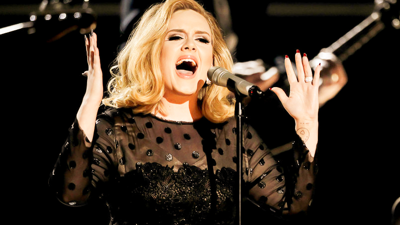
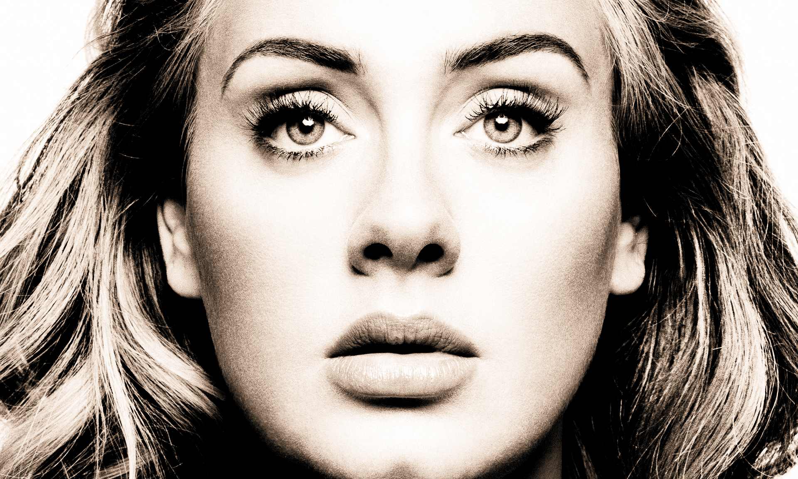
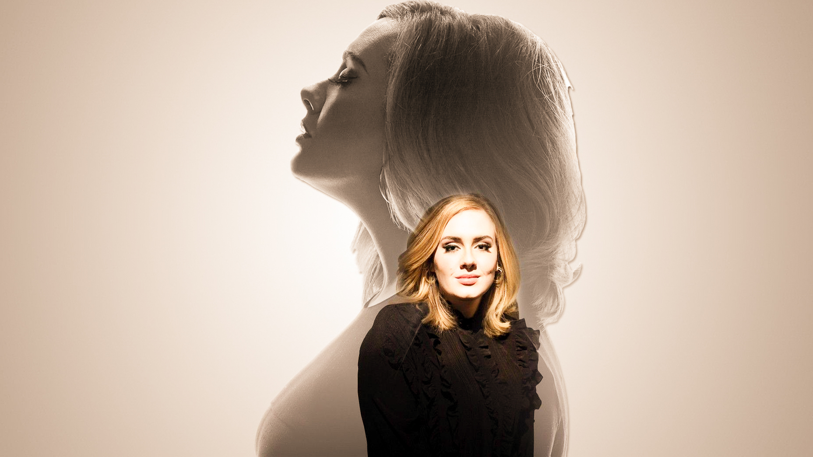
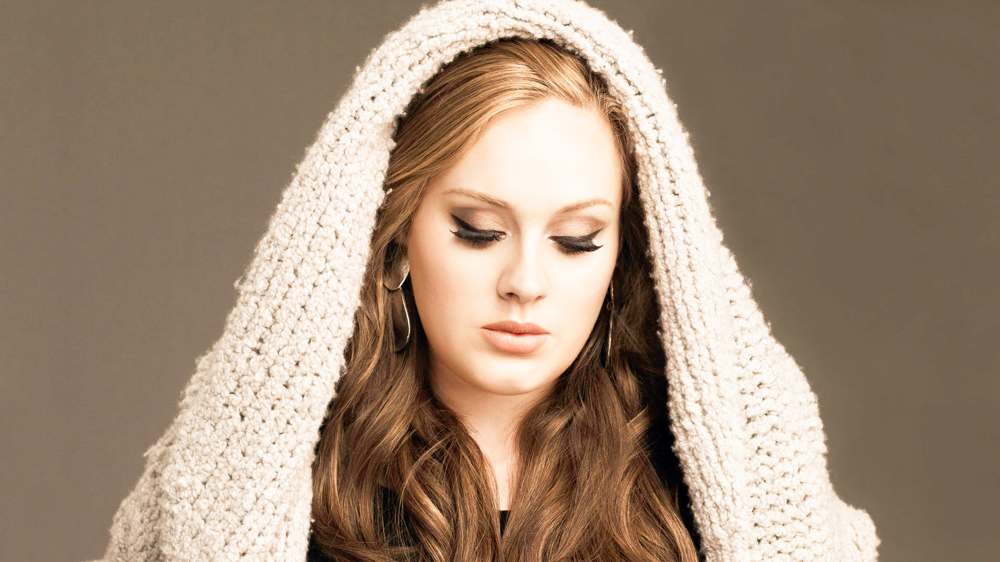

   

ABOUT THE ARTIST
Adele Laurie Blue Adkins MBE (born on the 5th of May, 1988) is an English singer and songwriter. Adele Laurie Blue Adkins was born on 5 May 1988 in the Tottenham district of London, to an English mother, Penny Adkins, and a Welsh father, Marc Evans.Adele is a British singer-songwriter who has sold millions of albums worldwide and won a total of 15 Grammys as well as an Oscar. Adele's first two albums, 19 and 21, earned her critical praise and a level of commercial success unsurpassed among her peers. After becoming a mom in 2012, Adele returned to the charts with the ballad "Hello" in 2015, the lead single from what was dubbed her comeback album 25. In 2017 she won five Grammys for her work on 25, including album, record and song of the year. Early on, Adele developed a passion for music. She gravitated toward the songs of Lauryn Hill, Mary J. Blige and Destiny's Child.
But her true, eye-opening moment came when she was 15 and she happened upon a collection of Etta James and Ella Fitzgerald records at a local shop. "There was no musical heritage in our family," Adele told The Telegraph in a 2008 interview. "Chart music was all I ever knew. So when I listened to the Etta James and the Ella Fitzgerald, it sounds so cheesy, but it was like an awakening. I was like, oh, right, some people have proper longevity and are legends. I was so inspired that as a 15-year-old I was listening to music that had been made in the '40s."While clearly bright, Adele wasn't oriented towards traditional classroom settings. Instead, her mother enrolled her in the BRIT School for Performing Arts and Technology, which counts Amy Winehouse as an alum.While at school, Adele cut a three-track demo for a class project that was eventually posted on her MySpace page. When executives at XL Recordings heard the tracks, they contacted the singer and, in November 2006, just four months after Adele had graduated school, signed her to a record deal.
However there is more to Adele and her unique persona, her interview with NPR music 'You Can't Prepare Yourself': A Conversation With Adele explores many areas of her life, showcasing her humbleness and humour. For instance, her take on having kids is something many new parents can relate to. She mentions: "It's the most shocking thing when you have a child; you can't prepare yourself. It's like, Oh my God. What have I done?".
To read the full interview Listen to her albums below: